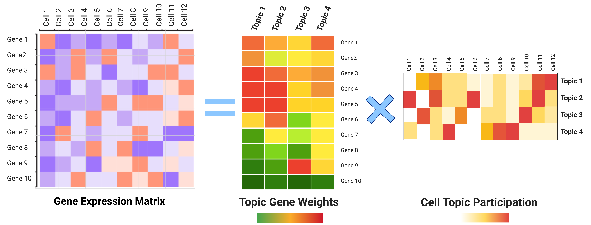

Topyfic
An open challenge for the analysis of single-cell data is the identification of distinct cellular programs that may be simultaneously expressed in the same cell based on the interaction of genotypes in environments. Latent Dirichlet allocation (LDA) is a popular statistical method for the identification of recurring patterns in count data (e.g. gene expression), which are referred to as topics. These topics are composed of genes with specific weights that can together explain underlying patterns of gene expression profile for each individual cell. In particular, each cell’s expression profile can be decomposed into a combination of the topics that can be analyzed both globally using topic-trait enrichment as well as in individual cells using structure plots. Due to the random initialization of LDA algorithms, topic definitions can vary substantially each time that the algorithm is rerun, which hinders their interpretability. Therefore, we developed reproducible LDA where we define our topics by analysing their reproducibility across a large number of runs.
Topyfic is a Python library designed to apply rLDA to single_cells/bulk RNA-seq data to recover meaningful topics that involve the key transcription factors involved in myogenic differentiation.
{kind=link}

You can find GitHub pages here.